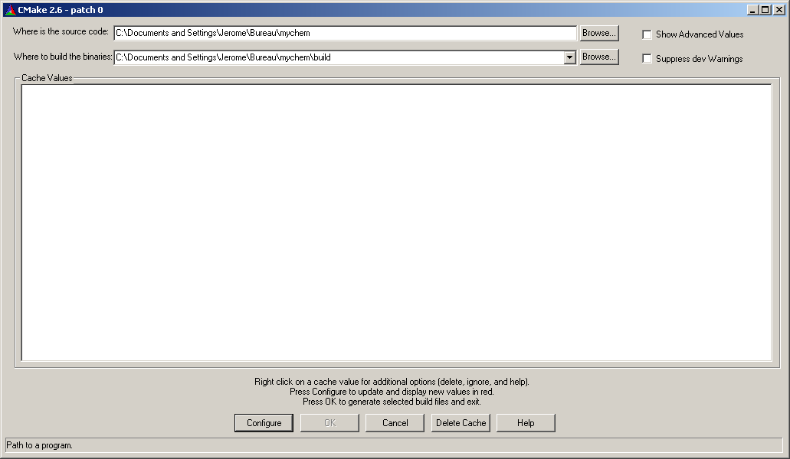
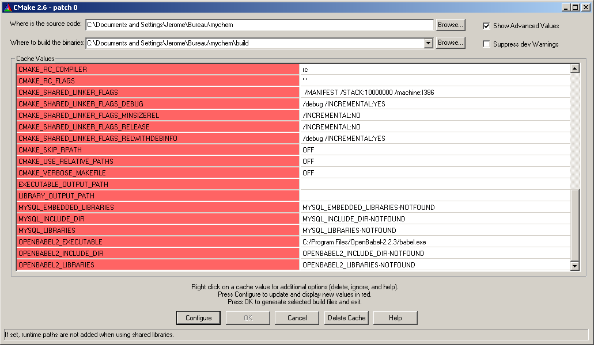

Installation
In this chapter, we will discuss the steps necessary to compile and install Mychem.
- How to Obtain Mychem - mainly concentrates on downloading the last stable version of Mychem.
- Requirements - lists the programs and libraries which you need installed to successfully compile Mychem.
- Compilation and Installation - leads you through all the steps of compilation and installation of the application.
- Mychem API - tells how to build the API documentation of Mychem.
How to Obtain Mychem
At this time, Mychem is only available as a source package that you need to compile. You can also get the last snapshot directly from the GIT repository (take care, this version can be unstable). It is planned to release binaries in a future release of Mychem.
Source Package
The last source package can be found on the Project Homepage hosted by SourceForge.
GIT Repository
The last development version of Mychem can be obtained by cloning the GIT repository. In case you are using a command line interface, follow this step:
$ git clone https://github.com/mychem/mychem-code.git
Requirements
In order to successfully compile and install Mychem, you need the following programs and libraries.
C/C++ compiler
The compilation has been tested successfully with the GNU C Compiler (GCC).
CMake version 2.6.0 or higher.
CMake is a multi-platform Makefile generator. It is a Free Software and can be downloaded on the CMake website.
MySQL version 4.0 or higher, or MariaDB.
The MySQL database server is available from the MySQL website. The MySQL headers are also required for the compilation. They are included with the standard MS Windows installation of MySQL. For Linux, an additional package has to be installed (libmysqlclient-dev).
Open Babel version 2.3.2 or any later version. The compilation of Mychem requires also the openbabel header. For MS Windows, they are provided with the source package. For Linux, install the libopenbabel-dev package.
The software is available from the Open Babel Home Page.
Compilation and Installation
This section describes the compilation of Mychem’s source files for GNU/Linux, Mac OS X and Microsoft Windows.
Compiling and Installing Mychem on GNU/Linux
This section contains the compilation and installation instructions for Mychem on GNU/Linux.
Standard Installation on GNU/Linux
This section describes the standard way to compile and install Mychem on GNU/Linux. You have to check that the header files for the MySQL library and the Open Babel library are installed on your workstation. If they are not installed, the CMake software will raise an error when generating the Makefile. First, extract the appropriate source package. If you are using a command line interface, follow this instructions:
For the tar gzipped archive:
$ tar -xfzv mychem-1.0.0.tar.gz
For the zip archive:
$ unzip mychem-1.0.0.zip
CMake can build the libraries and executables into any directory. If the directory contains the source, the build is called in source. In other cases, it is called out of source. CMake strongly recommends and promotes building out of source.
In source build:
$ cd mychem-1.0.0 $ cmake . $ make $ sudo make installBuild out-of-source (recommended):
$ cd mychem-1.0.0 $ mkdir build $ cd build $ cmake .. $ make $ sudo make install $ cd ..
Note
The default installation directory can be retrieven with the following command:
$ mysql_config --plugindir /usr/lib/x86_64-linux-gnu/mariadb18/plugin
Once the library is installed, the SQL functions are created with the following command:
$ mysql -u user -p < src/mychemdb.sql
Note
On Mac OS X and Windows, another SQL file is used instead of the
src/mychemdb.sql file. The name of this file is detailed in the
corresponding OS section.
Customized Installation
You can customized the build and installation process by modifying CMake arguments. For example, if you want to change the path of the installation directory:
$ cd /path/to/mychem/build
$ cmake -DCMAKE_INSTALL_PREFIX=/convenient/path ..
If you want to have more details about the compilation process, use the
following option for the make command:
$ make VERBOSE=1
Ubuntu specifities
AppArmor is a Linux Security Module and is installed by default on Ubuntu. It permits to confine individual programs to a set of listed files. To configure correctly AppArmor for Mychem, please follow the instructions detailed in the AppArmor section.
Testing the installation
Since v0.5, Mychem includes a test suite. To build and use these programs, you have to set the MySQL connection settings and run the tests. The following example builds Mychem out-of-source and enables testing.
$ cd mychem-1.0.0
$ mkdir build
$ cd build
$ cmake -DMY_HOST=localhost -DMY_USER=user -DMY_PASSWD=passwd ..
$ make
$ make install
$ cd ..
When running the command:
$ cmake -DMY_HOST=localhost -DMY_USER=user -DMY_PASSWD=passwd ..
You will see the following line in the status message:
-- Test module enabled
The program use the mysql database for testing. If the user do not have access to this database, it is possible to set the name of the database by using the -DMY_DB option.
Note
If the user can access MySQL without a password, then you do not need to set the
MY_PASSWDparameter. The two other parameters (MY_HOSTandMY_USER) are mandatory.Note
The password is not stored in a safe location. If you are doing tests on a critical server, please use directly the test executables and do not use the CMake facility to perform the tests ! You can find the test executables in the
/path/to/mychem/build/testsdirectory.
To run the tests, use the command make test. You should see the
following results:
Running tests...
Test project mychem-code/build
Start 1: ConversionTest
1/5 Test #1: ConversionTest ................... Passed 0.05 sec
Start 2: HelperTest
2/5 Test #2: HelperTest ....................... Passed 0.00 sec
Start 3: ModificationTest
3/5 Test #3: ModificationTest ................. Passed 0.01 sec
Start 4: MolmatchTest
4/5 Test #4: MolmatchTest ..................... Passed 0.04 sec
Start 5: PropertyTest
5/5 Test #5: PropertyTest ..................... Passed 0.03 sec
100% tests passed, 0 tests failed out of 5
Total Test time (real) = 0.14 sec
The LastTest.log file contains more details about the test results.
It can be found in the /path/to/mychem/build/Testing/Temporary
directory.
Installation Troubleshooting
Building your application can raise some errors:
If CMake returns the following error:
CMake Error: This project requires some variables to be set, and cmake can not find them. Please set the following variables: OPENBABEL2_INCLUDE_DIR (ADVANCED) OPENBABEL2_LIBRARIES (ADVANCED)
It means that CMake did not find Open Babel. If you know where Open Babel is installed on your system, you can tell it to CMake with:
$ cd /path/to/mychem-1.0.0/build $ cmake -DOPENBABEL2_INCLUDE_DIR=/path/to/openbabel/include \ -DOPENBABEL2_LIBRARIES=/path/to/library ..
Installing Mychem on Mac OS X
The installation on Mac OS X differs slightly from an installation on GNU/linux. First, you have to set some parameters for CMake. The following list shows common values used when compiling Mychem on Mac OS X. Note that these values may differ on your system.
| CMake Variable | Value |
|---|---|
| OPENBABEL2_INCLUDE_DIR | /usr/local/include/openbabel-2.0 |
| OPENBABEL2_LIBRARIES | /usr/local/lib/libopenbabel.dylib |
| MYSQL_INCLUDE_DIR | /Library/MySQL/include/mysql |
/Applications/MAMP/Library/include/mysql |
|
| MYSQL_LIBRARIES | /Library/MySQL/lib/mysql/libmysqlclient.dylib |
/Applications/MAMP/Library/lib/mysql/libmysqlclient.dylib |
Once the library is installed, the SQL functions are created with the following command:
$ mysql -u user -p < src/mychemdb_macosx.sql
When executing the previous command, you can have the following problem:
$ mysql -u root -p < src/mychemdb_macosx.sql
Enter password:
ERROR 1126 (HY000) at line 10: Cannot open shared library 'libmychem.dylib'
(errno: 2 dlopen(/usr/local/mysql/lib/plugin/libmychem.dylib, 2): Library
not loaded: libmysqlclient.18.dylib
Referenced from: /usr/local/m)
This problem can be fixed by modifying the libmychem.dylib shared library so that all dependent libraries contain the correct path information:
$ otool -L libmychem.dylib
libmychem.dylib:
/usr/local/lib/libmychem.0.dylib (compatibility version 0.0.0, current
version 1.0.0)
/usr/local/lib/libopenbabel.4.dylib (compatibility version 4.0.0,
current version 4.0.1)
libmysqlclient.18.dylib (compatibility version 18.0.0, current version
18.0.0)
/usr/lib/libSystem.B.dylib (compatibility version 1.0.0, current
version 159.1.0)
/usr/lib/libstdc++.6.dylib (compatibility version 7.0.0, current
version 52.0.0)
$ sudo find / -name 'libmysqlclient.18.dylib' -print
Password:
/usr/local/mysql-5.5.24-osx10.6-x86_64/lib/libmysqlclient.18.dylib
$ sudo install_name_tool -change libmysqlclient.18.dylib \
/usr/local/mysql-5.5.24-osx10.6-x86_64/lib/libmysqlclient.18.dylib \
libmychem.dylib
Installing Mychem on Microsoft Windows
This section describes contains the installation of Mychem on Microsoft Windows.
Installation using Microsoft Visual Studio Express 2005
You can compile Mychem with Microsoft Visual C++ 2005 Express Edition ( MSVC++ ). This software can be downloaded from the Microsoft MSDN Website. To complete the Microsoft Visual C++ software, install the SDK Platform. The instruction are given in the following article. The MySQL package for Windows contains all required libraries and include files for building Mychem. However, Open Babel does not provide such a package. You have to compile Open Babel. It can easily be done with MSVC++ and by following the instructions detailed on the Open Babel Website. The following libraries are necessary for the build of Open Babel. They can be downloaded from the Maintainer’s Home Page of the libxml2 Windows port.
- iconv
- libxml2
- zlib
Once your compilation environment is ready, you can generate the MSVC++ project file with CMake. Launch the CMake GUI and set up the source code directory and the build directory for the binaries.
Then, click on Configure. A window will appear to let you select what build system you want CMake to generate files for. Choose Visual Studio 8 2005 and click on Ok. After some processing, CMake will raise an error window, telling you that some variables are not founded. You will have to set it manually. Press twice the Ok button. Click on the Show Advanced Values checkbox to display the full list of parameters. Find the lines with OPENBABEL2_INCLUDE_DIR, OPENBABEL2_LIBRARIES, MYSQL_INCUDE_DIR, MYSQL_LIBRARIES values. These lines are at the end of the list.
You have to set OPENBABEL2_INCLUDE_DIR to the directory include
contained in the Open Babel source directory (i.e.,
C:/path/to/openbabel/include) and OPENBABEL2_LIBRARIES to the file
named OpenBabelDLLD.lib (the library should be located in the
C:/path/to/openbabel/windows-vc2005/OpenBabelDLL/Debug directory).
The MYSQL_INCLUDE_DIR and MYSQL_LIBRARIES parameters should be
respectively set to C:\Program Files\MySQL\MySQL Server X.Y\include and
C:\Program Files\MySQL\MySQL Server X.Y\opt\libmysql.lib, where X.Y is the version of MySQL.
Once the values are set, click on Configure and then on Ok. CMake
generates the MSVC++ project file (mychem.sln) and exit.
Once the project file is generated, open it with MSVC++ . The
mychem.sln project file should be located at
C:/path/to/mychem/build/. Several modules are available for
building, however, only mychem-lib is required:
- mychem-lib
- conversion_test
- helper_test
- modification_test
- molmatch_test
- property_test
If you build the debug version of Mychem, the Mychem DLL file is
located in the C:/path/to/mychem/build/dir/src/debug directory and
is named mychem.dll. You have to copy this DLL file into the MySQL
bin directory. Then copy the
C:/path/to/openbabel/windows-vc2005/OpenBabelDLL/Debug/OpenBabelDLLD.dll
DLL file and all DLL files founded into the
openbabel-2.400/windows-vc2005 directory to the MySQL bin
directory.
At last, restart MySQL and run the win32 SQL script
/path/to/mychem/src/mychemdb_win32.sql.
Mychem API
API documentation is available on the Mychem website.
You can also build the documentation yourself, by using the Doxygen software. To generate this documentation, use the following commands:
$ cd /path/to/mychem-1.0.0
$ mkdir api
$ doxygen Doxyfile
The API documentation can be read using a web browser at the following
url: file:///path/to/mychem-1.0.0/api/html/index.html